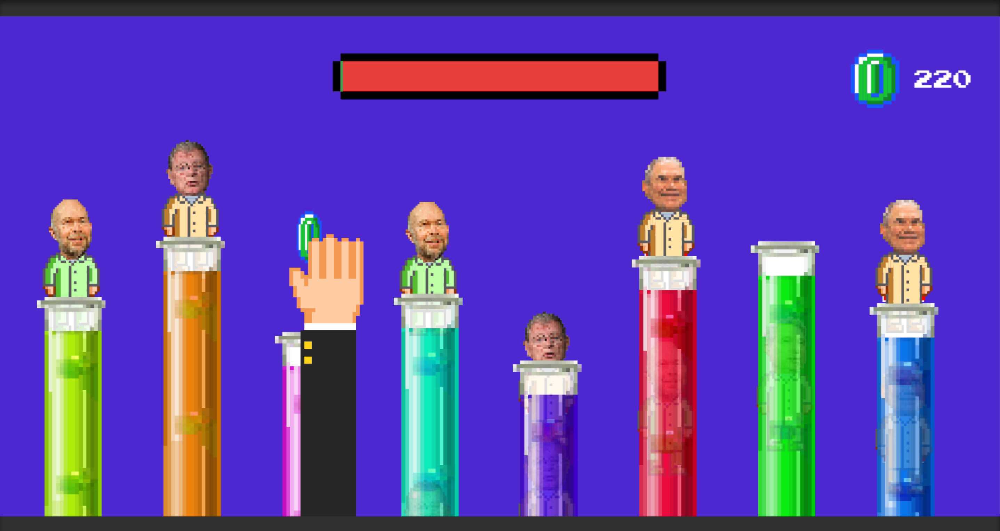

AMERICA 2050
Politically informative games with a liberal & satirical slant.

Politically informative games with a liberal & satirical slant.
This project is the result of a team effort around the political education process. The apathy among young voters is well documented, and we had to put our creative heads together to come up with an engaging solution that could circumvent the lack of enthusiasm. Click the button below to read the full story.
DESIGN PROCESSI was specifically responsible for: designing and developing the flagship video game, designing the web interface for the games, and naming & branding the product. To see the fully realized products, keep scrolling, or click the button above to jump to the design process and see how it was all made.
A look at the flagship game, Whack-A-Scientist

Crooked Media is a liberal political media company with a host of podcasts that aims to promote open conversation and support political participation. AMERICA 2050 provides an opportunity for users to educate themselves about how our government really works. By strengthening their listeners' foundation of political knowledge, they hoped to increase the value of their media offerings.
If you’re alive and reading this, you know that American politics are chaotic, convoluted, and often just plain crazy. The situation isn't helped much by Americans' lack of civic knowledge. It is crucial for voters to be informed in order for them to make the right decisions on voting day.
AMERICA 2050 is a web-based gaming platform. Upon signing in, the user is greeted with a welcome message explaining the premise: it is 2050, and anyone with enough money now has the ability to purchase laws. The user plays a variety of arcade-style games to collect coins and buy laws, which are used to unlock new levels, games, and achievements, and attain a spot on the leaderboard. The tone is clearly satirical, matching the humorous dialogue in Crooked Media's podcasts.
WHY CROOKED MEDIA?An early iteration of the web interface

Developing in Unity

MAKING A GAME SIMPLE, FUN, AND EDUCATIONAL
CONSIDERATIONS
Taking into account the time frame of the project, we had to decide upon a single game to fully develop for the presentation. The key consideration in this area was to create something fun and engaging with the educational aspect almost a side-effect of the overall experience. Simplicity and familiarity will go a long way towards user engagement.
OUTCOMES
We chose climate change as the topic for the flagship game: everyone is familiar with the controversy and likely has their own opinions on it, and it is an area of politics that will be at the forefront of public discussion for many election cycles to come. We adapted a whack-a-mole style game where the player smacks vocal climate change scientists for cash. Each play-through ends with an information panel that explains the connection between the game and real-world events and offers additional links to Crooked Media content and elsewhere.
Can you beat 350 points?
Exploring different sources of inspiration for the AMERICA 2050 branding

AS CROOKED AS YOUR POLITICAL AGENDA
CONSIDERATIONS
We wanted to keep the platform's branding in alignment with Crooked Media for familiarity's sake (we expect most users to arrive at the site from a Crooked Media offering), while endowing it with something unique to establish it as its own entity. Explorations included the United States' official color palette, old video games, and of course Crooked Media's own branding.
OUTCOMES
Ultimately, we decided to move ahead with a slightly modified Crooked Media color palette and an 8-bit pixel art style. The 8-bit style was chosen to provide a level of abstraction from political reality as well as a callback to the target audience’s younger days and the video games of the 80s and 90s.
AMERICA 2050 branding

The AMERICA 2050 welcome animation
WELCOME TO AMERICA IN THE YEAR 2050
CONSIDERATIONS
The home screen needed to clearly communicate the hypothetical situation the user is placed in. Every important function within the platform should be accessible from the home screen, allowing the user to quickly get started playing games or exploring the social/profile settings.
OUTCOMES
We decided to develop an introductory animation along with the log-on screen to convey the dystopian mood of the platform and clearly explain the premise. After logging on, users are able to jump right in to a game and start earning points.
The AMERICA 2050 home page

Our research was primarily conducted online and supported by candid conversations with the target audience we identified. Our key findings didn't reveal any groundbreaking insight, but served to remind us of the breadth of the problem we were trying to solve. We organized the many facets of the issue at hand into four categories:
Many of our initial ideas unfortunately suffered from the lame-ness that seems inextricably linked to all things political, but we noticed a trend among the few that were more plausible: they involved some sort of game or reward component. It seemed the only way to combat political ennui.
Gamification makes less-fun stuff more fun!
Our initial explorations gave rise to ideas such as: a "Guess Who?" game for politicians; a localized issue-tracking app with participation rewards(already exists); politician trading cards; and a Build-Your-Own Political Platform competition among schools.
Initial concepting brought to you by Google Docs

REACHING TODAY'S MILLENIAL VOTERS
Crafting a user persona for this project was fairly easy, given the Crooked Media listenership demographics. Jill Abramson, former NY Times editor and current Guardian contributor, summed it up thusly:
They have the young liberal demographic sewn up in the same way Jon Stewart did on cable in 2000.
Basically, we were targeting young left-leaning millennials, perhaps entering the political fray for the first time, likely feeling disenchanted with Trump-era politics, and exhibiting a desire to fight for change or at least willing to educate themselves and stay up to date on what's happening. Here's Troy:
What a handsome millenial!

AMERICA 2050: A RETRO-FUTURISTIC DYSTOPIAN WORLD
In sum, we were designing an educational tool for young liberals who, while ostensibly concerned with the state of politics in America, are likely shockingly ignorant of the political system itself. There are many reasons for this ignorance, and our solution must sidestep these obstacles by correctly applying the principles of gamification to drive engagement and subvert the “politics = boring” mindset. I brought the core idea to a team meeting, and together, we developed the full concept:
A satirical gaming platform that educates players about the prevailing issues in American politics.
Just a few decades from now, Trump-era politics have become the norm. The American government has shed its mask of democracy and the real lawmaking mechanism has been laid bare: cash money. Lobbying is now the fastest growing and most profitable profession, and you are but one of thousands of eager young grads trying to make a buck. AMERICA 2050 is a gaming platform set in a not-too-distant dystopian future where users play as villainous lobbyists trying to get their crooked agendas through Congress.The various games tackle different issues that our nation is currently dealing with, from an exaggerated and satirical standpoint. The user plays games to collect coins and buy laws, which unlock new games and increase their standing on the leaderboard.
CROOKED AGENDAS, CROOKED MEDIA
Crooked Media is a liberal political media company with a host of podcasts that aims to promote open conversation and support political participation. They wanted to provide an opportunity for users to educate themselves about how our government really works. By strengthening their listeners' foundation of political knowledge, they hoped to increase the value of their media offerings. They are a perfect match for this initiative, due to both their humorous take on politics and their mission:
That’s why we launched Crooked Media — to talk about politics in a way that doesn’t make you want to throw your phone out the window – with shows and analysis and other forms of sweet, sweet content that inform, entertain, and inspire action.
Keep it real, folks

In order to frame the idea as something realistically possible, we needed to develop assets showing how it could work. These included a working version of the flagship video game, a prototype of the web platform for desktop & mobile, and branding for the initiative. You can see the finished products in the first three sections above.
JUMP TO TOPA simple user flow through the platform

I used a variety of tools to bring this project to life: Affinity Designer for the 8-bit art and branding, Sketch to wireframe & prototype the desktop & mobile website and create the UX assets, Keynote to prototype the video game, Unity to develop the video game, and Google Drive to concept & collaborate.
Tools & technologies used in this project

The team for this project consisted of myself (experience designer), Colin O'Shea (art director), Lauren Acampora (art director), Meghan Gaffney (experience designer), Belem Medina (experience designer), and Joe Jones (art director). These folks are incredible — be sure to check them out.